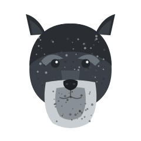

Breed Standards
History, size, and the salt-and-pepper coat that defines the breed.
Read more about breed standardsA friendly guide to the breed
Smart, spirited, and endlessly loyal, the Miniature Schnauzer packs a big personality into a small, low-shedding package. This guide covers the breed’s standards, temperament, health, training, and grooming — everything you need before and after bringing one home.
Explore the breed
Each page breaks down one part of life with a Miniature Schnauzer.
History, size, and the salt-and-pepper coat that defines the breed.
Read more about breed standardsAlert, affectionate, and curious — how the breed fits your home.
Read more about temperament
They thrive on company, need regular grooming, and love having a job to do. Start with temperament to see if the breed fits your household.
Read about temperament